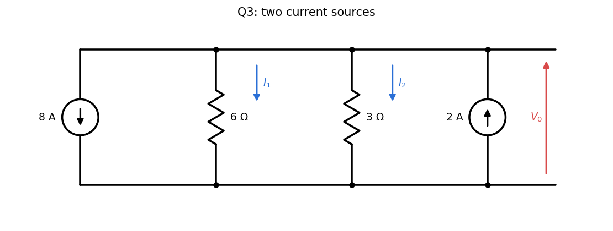

Basic Electrical Engineering · Problems · 2 min read
T1-Q3: Two Current Sources, One Node Pair
Hub: Tutorial 1 - Circuit Laws and Theorems · Theory: Theory - Circuit Laws and Network Theorems · Previous: T1-Q2 - KVL with Three Batteries · Next: T1-Q4 - Dependent Source and Power Balance
Tests: KCL at a node pair, Ohm's law, power sign convention.
Given
Four elements in parallel between the top and bottom rails: current source 8 A (arrow downwards), ( downwards), ( downwards), current source 2 A (arrow upwards). is the voltage of the top rail with respect to the bottom.
Principle and why it applies
Everything is in parallel, so there is one unknown voltage, , and one KCL equation. Current sources fix currents, not voltages; the resistors then convert the net source current into a voltage.
Diagram

Solution
The 2 A source pushes A into the top node, the 8 A source pulls A out of it. The net current the sources deliver into the top node is A, and it must leave through the two resistors:
The negative signs mean the actual currents flow upwards through the resistors; the 8 A source takes more out of the top node than the 2 A source puts in, so the top rail sits at a lower potential than the bottom.
Result
The sheet's A and W both require V; with V the would dissipate W. V looks like a misprint (it is half the right value). All three other answers agree with V.
Check
Energy balance with signs. Resistors absorb W (: W). The 8 A source: current flows down through it, voltage drop in that direction is V, so it absorbs W, i.e. delivers 96 W. The 2 A source: current flows up, voltage rise V, delivered W, i.e. absorbs 24 W. Delivered absorbed ✓.
Trap / alternative
A current source can absorb power; do not assume a source always supplies. And a current source in series with a resistor is irrelevant to the voltage across the parallel combination, only the parallel elements matter.
Concepts used
- KCL at a node pair, power sign convention (Theory - Circuit Laws and Network Theorems)